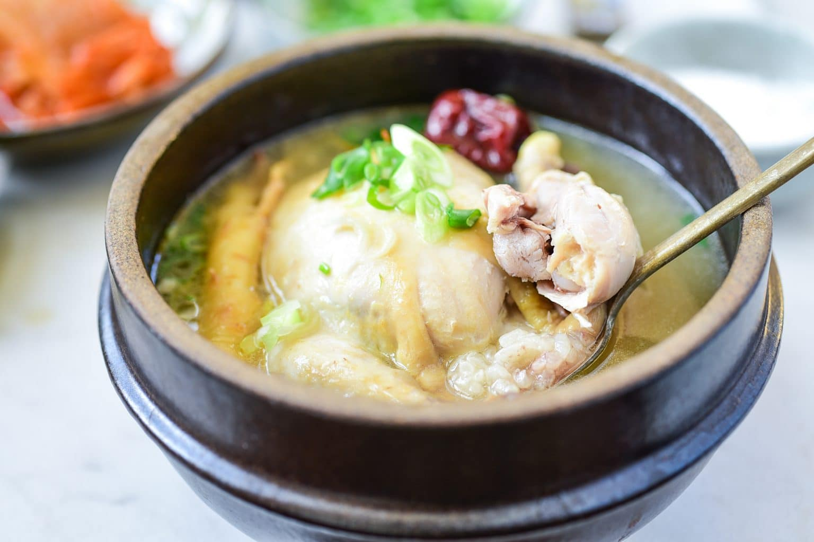
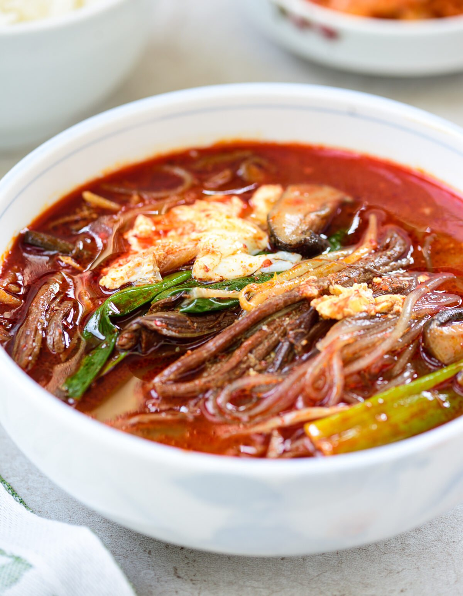
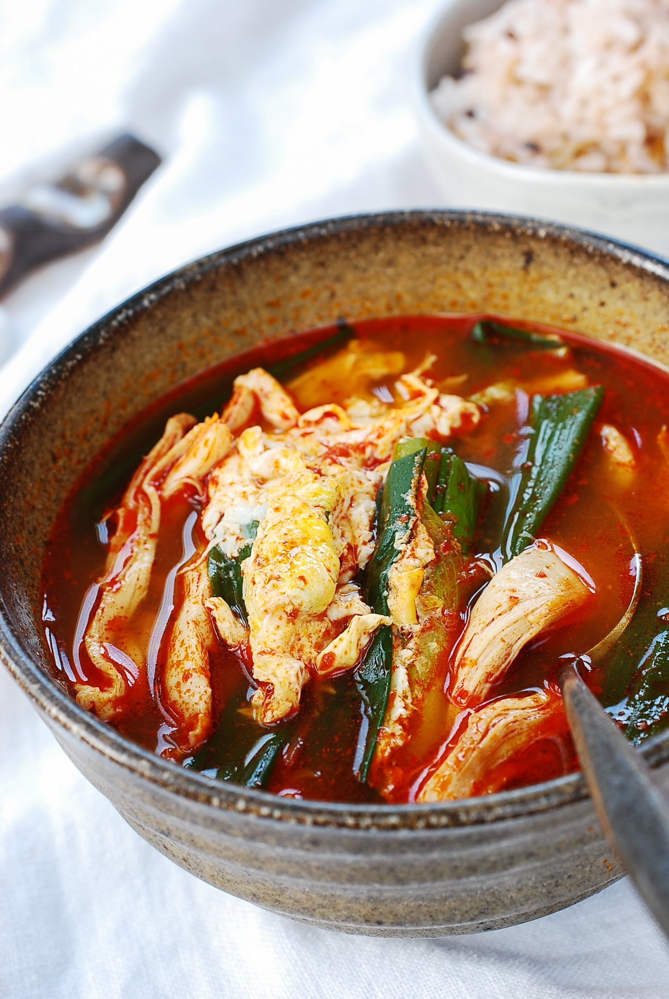

A nourishing soup that’s made with a small, young chicken for its tender and tasty meat. The ginseng flavored meat is tasty and tender, and the broth is rich and delicious!

Samgyetang (Ginseng Chicken Soup)
A nourishing soup that’s made with a small, young chicken for its tender and tasty meat. The ginseng flavored meat is tasty and tender, and the broth is rich and delicious!

Yukgaejang (Spicy Beef Soup with Vegetables)
A hearty, spicy beef soup made with shredded beef, lots of scallions and other vegetables!

Dakgaejang (Spicy Chicken Soup)
A hearty and spicy chicken soup with minimal ingredients! It takes less than 30 minutes from start to finish! Still flavorful and satisfying! Also see Spicy soup with leftover turkey for a variation.
Galbitang (Beef Short Rib Soup)
A hearty, nourishing beef short rib soup with the delicately clean taste it’s known for! Also see Instant Pot Galbitang.
About Us
Our Mission: We want to help every Filipino to cook in the comfort of their home. Simple dishes but delicious, healthy, and budget-friendly. Maybe you want something to eat now? Go and cook the desire of your tummy.